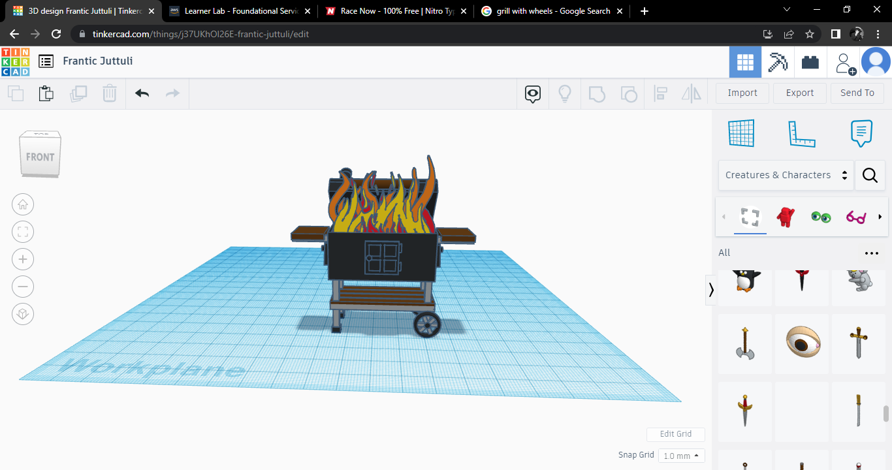
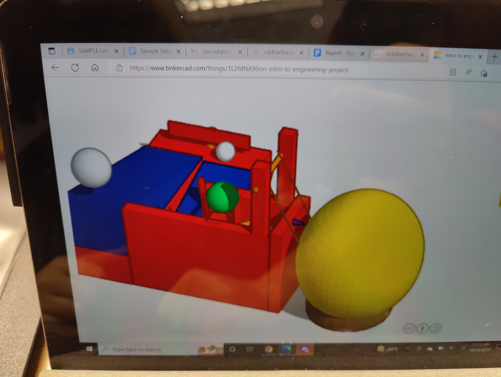
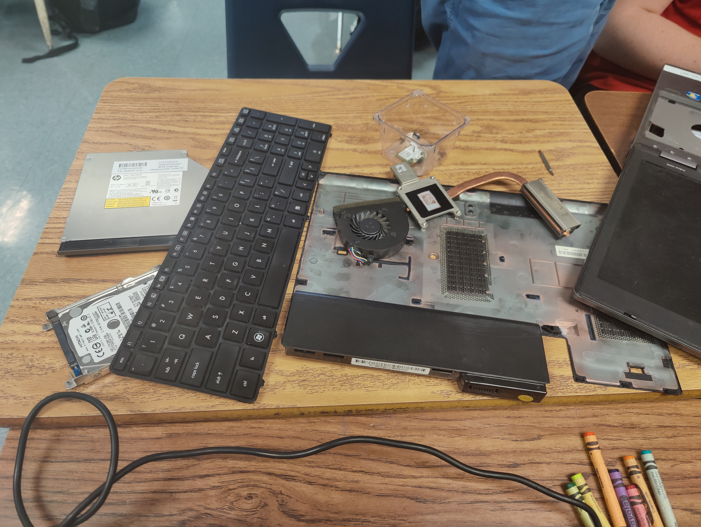
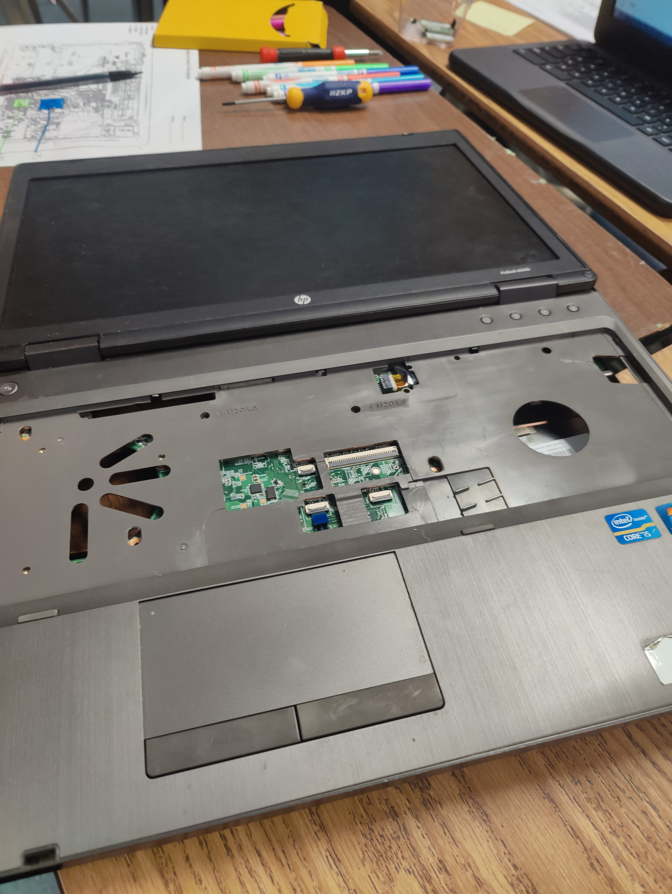
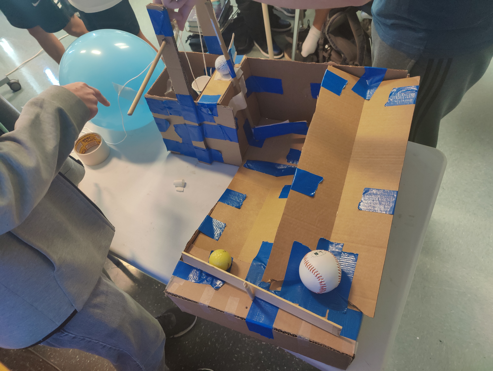

Hello world!
This is my first web :)
Tortilla
Engineering Journal
9/2/22
We have made our own Tinkercad Designs.

9/9/22
Isaac made a Goldberg Tinkercad design that has a pully.

9/16/22
Made a Boat in class and tested how much it could carry.
9/26/22
diesected a laptop.


9/26/22
We Have finished our Goldberg project and have tested it we had a few complications but we managed to enginner our way through it

10/7/22
Animal Prosthetic Tinkercad design Rhino Horn.
10/10/22
Bottle rocket tinkercad design,We have designed it as a glider since the bottle would be at an angle.
10/21/22
Bottle rocket done and tested.
10/27/22
Made purified water with soda bottle and a few materials.
11/8/22
Messed around with a circuit board.
11/16/22
Made a lighting module withe the circuit board.
12/5/22
We have made designs for our final speghetti bridge.We have came up with a lot of concepts some seem to not be able to work.The ones we kept making seemed to get stuck on paper or break during the tests.
12/12/22
We have managed to test one of our bridges and it managed to hold up one cup filled with water and one small bucket also filled with water.
12/14/22
As a group we have decided to improve the bridge by just incasing it with glue hoping nothing would happen. The project was a massive fail all of thinking sealing the speghetti in glue with boba straws as the mold was a good idea but it was not.
we have waited a whole weekened for the glue to dry and it hasn't. The main issue was that there was no air for the glue to dry. The first day of incasing in glue there was a leak but that was easily patched with tape. On the other hand our project suffered by not getting the actual treatment it needed is actually getting air. The glue made the spaghetti seemed cooked and stringy.
12/16/22
We have decided to try one last time to save the project by making something completly new knowing it is doomed to fail.
12/20/22
Our final project was a success it managed to hold but we also lost because we wern't suppose to make a rod.